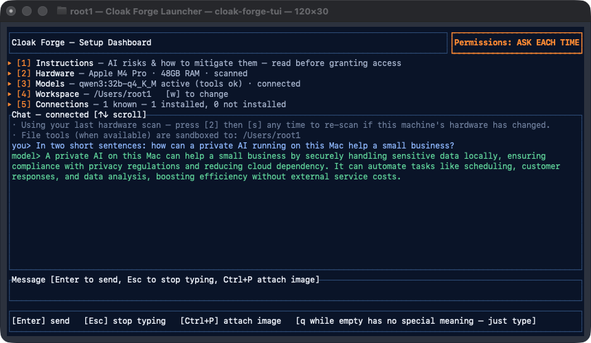

<style>
  .lp{max-width:70ch}
  .lp p,.lp li{color:var(--ink-dim)}
  .lp h2{margin-top:2.6rem;font-size:1.4rem}
  .lp h2:first-of-type{margin-top:1.5rem}
  .lp .updated{font-family:"IBM Plex Mono",monospace;font-size:.8rem;color:var(--ink-faint);margin-top:.5rem}
  .lp a{color:var(--ember-soft)}
  .shot{border:1px solid var(--line);border-radius:12px;overflow:hidden;margin:1.8rem 0;box-shadow:0 20px 50px -25px rgba(0,0,0,.5)}
  .shot img{display:block;width:100%;height:auto}
  .shot-caption{font-size:.78rem;color:var(--ink-faint);margin-top:.6rem}
  /* storm on its side, running from the title down to just under the dashboard
     screenshot: rolling navy storm clouds with lightning */
  .storm-zone{position:relative;overflow:hidden}
  .storm-zone > .section{position:relative;z-index:1;border-top:0}
  .storm-hero{min-height:clamp(360px,52vh,560px);display:flex;align-items:flex-end}
  .storm-hero > .wrap{width:100%}
  .storm{position:absolute;inset:0;z-index:0;pointer-events:none;background:#0a1428 url(media/storm-poster-tall.jpg) center top/cover no-repeat;
    -webkit-mask:linear-gradient(#000 78%,transparent);mask:linear-gradient(#000 78%,transparent)}
  .storm video{display:block;width:100%;height:100%;object-fit:cover;object-position:center top}
  .storm::after{content:"";position:absolute;inset:0;
    background:linear-gradient(90deg,rgba(10,20,40,.55) 0%,rgba(10,20,40,.15) 60%,rgba(10,20,40,0) 100%),
               linear-gradient(180deg,rgba(10,20,40,0) 0%,rgba(10,20,40,0) 30%,rgba(10,20,40,.4) 55%,rgba(10,20,40,.4) 100%)}
</style>

<header class="site-header"></header>

<main>
  <div class="storm-zone">
    <div class="storm" aria-hidden="true"><video id="storm-video" muted loop playsinline preload="none" poster="media/storm-poster-tall.jpg"></video></div>
  <section class="section storm-hero">
    <div class="wrap lp">
      <p class="eyebrow">The Launcher</p>
      <h1>Cloak Forge Launcher</h1>
      <p class="updated">A local-AI dashboard for your own Mac &mdash; no cloud, no subscription, one download.</p>
    </div>
  </section>

  <section class="section" style="border-top:0;padding-top:1rem">
    <div class="wrap lp">

      <h2>What it is</h2>
      <p>Cloak Forge Launcher is a terminal app that turns a fresh Mac into a working local-AI setup in one step. Open it, and it scans your hardware, works out the biggest language model your machine can actually run well, and gets a local model server (Ollama) running &mdash; bundled in, nothing to install first. From there you chat with the model entirely on your own device. Nothing you type leaves your Mac unless you switch on something that needs the internet, like web search.</p>

      <div class="shot">
        
      </div>
      <p class="shot-caption">The dashboard &mdash; Qwen3 32B running entirely on this Mac, answering in the chat panel.</p>
    </div>
  </section>
  </div>

  <section class="section" style="border-top:0;padding-top:0">
    <div class="wrap lp">

      <h2>What it does</h2>
      <ul>
        <li><strong>Hardware-matched model picks.</strong> Scans your CPU/GPU and unified memory, then recommends a model sized to fit &mdash; from a fast 1.7B model on modest hardware up to 235B-class models on a high-end workstation, always the largest size that will actually run well rather than just the largest that downloads.</li>
        <li><strong>Download and remove models freely.</strong> Pull any size whenever Web is on, after a quick confirmation, with visible live progress, and remove one later to free disk space &mdash; re-download it again whenever you want. Nothing is one-way.</li>
        <li><strong>Local, on-device chat.</strong> Talk to whichever model you have active, with optional file, shell, and web-search tools it can call (web search only while you have Web switched on) &mdash; each one permissioned to ask every time, auto-approve, or stay fully read-only, your choice.</li>
        <li><strong>Connections.</strong> A growing set of add-on modules that plug into the same local model instead of shipping their own separate AI &mdash; more on this below.</li>
      </ul>

      <h2>The models it can run</h2>
      <p>All 4-bit quantized, all Apache&#8209;2.0 licensed. It always defaults to the largest general-purpose size your hardware can run well; the vision and coding sizes are opt-in &mdash; listed and downloadable, but never chosen for you automatically.</p>

      <div class="mem" role="region" aria-label="Model sizes the launcher supports">
        <table>
          <colgroup><col class="c-mem"><col class="c-fit"><col></colgroup>
          <thead>
            <tr><th scope="col">Size</th><th scope="col">Download</th><th scope="col">What it's for</th></tr>
          </thead>
          <tbody>
            <tr>
              <td class="m-cap">1.7B</td>
              <td class="m-mid">1.4&nbsp;GB</td>
              <td class="m-note">Fast and light on almost any Mac. Fine for a single, simple tool call at a time; not for multi-step reasoning.</td>
            </tr>
            <tr>
              <td class="m-cap">1.8B <span style="color:var(--ink-faint)">(vision, opt-in)</span></td>
              <td class="m-mid">1.8&nbsp;GB</td>
              <td class="m-note">The lightest way to send it an image &mdash; basic description and detection, no tool-calling.</td>
            </tr>
            <tr>
              <td class="m-cap">8B</td>
              <td class="m-mid">5.2&nbsp;GB</td>
              <td class="m-note">A real step up in reasoning. Reliable for one tool call at a time; still shaky chaining several together.</td>
            </tr>
            <tr>
              <td class="m-cap">7B <span style="color:var(--ink-faint)">(vision, opt-in)</span></td>
              <td class="m-mid">6.0&nbsp;GB</td>
              <td class="m-note">Meaningfully better at reading documents, charts, and screenshots than the smaller vision size.</td>
            </tr>
            <tr>
              <td class="m-cap">14B</td>
              <td class="m-mid">9.3&nbsp;GB</td>
              <td class="m-note">A dependable everyday default &mdash; handles both single- and multi-step tool use with reasonable judgment.</td>
            </tr>
            <tr>
              <td class="m-cap">30B <span style="color:var(--ink-faint)">(coding, opt-in)</span></td>
              <td class="m-mid">18&nbsp;GB</td>
              <td class="m-note">Tuned for code and agentic tool use, with a 262K context window for large codebases. Stronger than the general 32B size at exactly this, weaker at open-ended writing.</td>
            </tr>
            <tr>
              <td class="m-cap">32B</td>
              <td class="m-mid">20&nbsp;GB</td>
              <td class="m-note">Strong general reasoning and dependable multi-step tool use &mdash; chaining tools, recovering from a bad result, nuanced instructions.</td>
            </tr>
            <tr>
              <td class="m-cap">~70B-class <span style="color:var(--ink-faint)">(MoE)</span></td>
              <td class="m-mid">28&nbsp;GB</td>
              <td class="m-note">A mixture-of-experts model giving roughly 70B-class quality at a fraction of the active compute. Chats well; can't call tools.</td>
            </tr>
            <tr>
              <td class="m-cap">235B-A22B <span style="color:var(--ink-faint)">(MoE)</span></td>
              <td class="m-mid">142&nbsp;GB</td>
              <td class="m-note">Frontier-class reasoning with full tool-calling. Realistic only on a very high-end unified-memory or multi-GPU workstation.</td>
            </tr>
          </tbody>
        </table>
      </div>

      <h2>Connections</h2>
      <p>Add-on modules that plug into the same local model instead of shipping their own &mdash; one AI setup on your machine, a growing set of tools that share it.</p>

      <div class="case" style="margin-top:1.8rem">
        <div class="case-head">
          <p class="case-kicker">Available now</p>
          <h3>Cloak Forge Email</h3>
          <p>Reads your inbox, drafts AI replies, and can auto-send for rules you turn on yourself &mdash; running only on the Launcher&rsquo;s private local AI, with no separate account or cloud AI.</p>
          <div class="case-cta">
            <a href="email.html" class="btn btn-primary">See Cloak Forge Email &rarr;</a>
          </div>
        </div>
      </div>

      <h2>Why local</h2>
      <p>No API bill that scales with usage, no account, and no dependence on a provider staying up or staying priced the way it is today. The trade-off is honest: a local model is not going to out-think a frontier hosted one. What you get instead is a setup that is entirely yours &mdash; working offline, still yours in five years regardless of what any AI company does, and fully private when you want it to be: one switch, Private Mode, cuts it off from the internet, other apps and your clipboard, and every leak check in our tests was blocked. <a href="privacy.html">How privacy works</a>.</p>

      <div class="launcher" style="margin-top:2.4rem">
        <div class="launcher-main">
          <p class="card-kicker">Cloak Forge Launcher</p>
          <ul class="case-specs">
            <li>macOS &middot; Apple Silicon</li>
            <li>bundled Ollama &mdash; no prior install</li>
            <li>hardware-matched model pick</li>
            <li>local chat, on-device</li>
            <li>Private Mode &mdash; one switch for full isolation</li>
            <li>permissioned file / shell / web tools</li>
            <li>Connections &mdash; add-on modules, same local model</li>
          </ul>
          <p class="case-note">Signed and notarized by Apple. Opens normally on first launch, no security override needed. Apple Silicon only for now.</p>
        </div>
        <aside class="launcher-buy">
          <p class="price"><span class="price-num">$50</span><span class="price-unit">one-time &middot; free updates</span></p>
          <button type="button" class="btn btn-primary btn-block" disabled>Buy the Launcher</button>
          <p class="buy-soon">Checkout opens soon &mdash; <a href="offerings.html#contact">get in touch</a> to hear when it&rsquo;s live.</p>
        </aside>
      </div>

      <p style="margin-top:2.5rem"><a href="offerings.html">&larr; Back to what we offer</a></p>
    </div>
  </section>
</main>

<footer class="site-footer"></footer>

<script>
(function(){
  "use strict";

  // storm clouds: real-time speed so the clouds visibly roll, easing into slow
  // motion while the page scrolls (120fps clip); reduced-motion keeps the poster
  var storm = document.getElementById("storm-video");
  if (storm && window.matchMedia("(prefers-reduced-motion: no-preference)").matches) {
    storm.src = "media/storm-120-tall.mp4";
    var REST = 1, rate = REST, goal = REST, stopTimer = 0, stepTimer = 0;
    storm.play().catch(function(){});
    function step(){
      rate += (goal - rate) * (goal < rate ? 0.35 : 0.08);
      if (Math.abs(goal - rate) < 0.01) { rate = goal; clearInterval(stepTimer); stepTimer = 0; }
      storm.playbackRate = rate;
    }
    function ease(){ if (!stepTimer) stepTimer = setInterval(step, 30); }
    window.addEventListener("scroll", function(){
      goal = 0.3; step(); ease();
      clearTimeout(stopTimer);
      stopTimer = setTimeout(function(){ goal = REST; ease(); }, 220);
    }, { passive: true });
  }
  var navBtn = document.getElementById("nav-toggle");
  var nav = document.getElementById("site-nav");
  if (navBtn && nav) {
    navBtn.addEventListener("click", function(){
      var open = nav.classList.toggle("is-open");
      navBtn.setAttribute("aria-expanded", open ? "true" : "false");
    });
  }
})();
</script>
